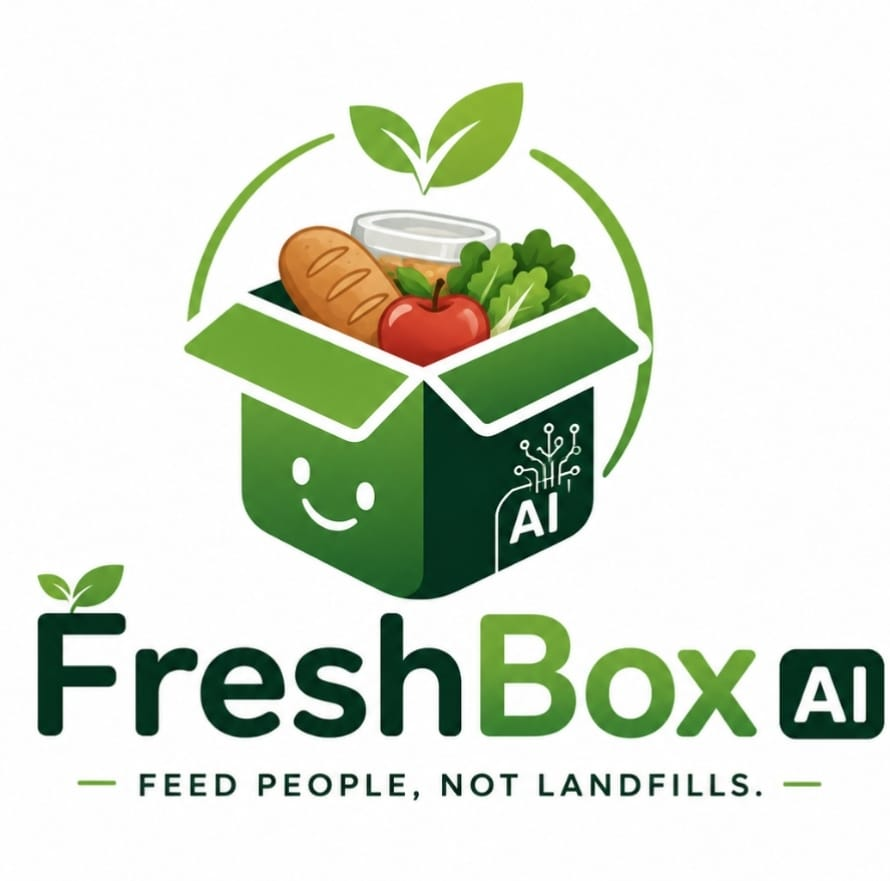

AI-POWERED FOOD RESCUE
Feed People. Not Landfills.
FreshBox AI helps businesses predict, prevent, and redistribute surplus food before it becomes waste.
01 — THE PROBLEM
Food is being wasted while people need it.
🍽️ Surplus Food
Restaurants, bakeries, hotels, supermarkets and caterers often have safe food left over because of overproduction, low demand, closing time and other factors.
🍲 Food Insecurity
At the same time, NGOs, shelters, community kitchens and vulnerable communities can struggle to obtain enough food.
🌍 Environmental Impact
Wasted food also wastes the water, land, energy, labour and transportation used to produce it.
02 — THE EVIDENCE
The problem is bigger than it looks.
tonnes of food waste globally in 2022
meals wasted every day at household level
of global greenhouse-gas emissions associated with food waste
estimated annual economic cost of food waste
03 — THE SOLUTION
Meet FreshBox AI.
From surplus food to a verified meal rescue — in minutes.
List
A restaurant uploads a photo or enters its surplus food details in under 30 seconds.
Match
FreshBox AI estimates the available meals and matches the donation with a nearby verified NGO, community kitchen, or volunteer.
Rescue
A volunteer receives the pickup route, collects the food, and FreshBox records the impact.
Surplus Food Detected
04 — HOW IT WORKS
From surplus to someone's table.
Predict
AI forecasts demand.
List
Restaurant lists surplus in under 30 seconds.
Match
FreshBox finds a verified recipient.
Pickup
Volunteer receives the fastest route.
Deliver
Food reaches the organization.
Track
FreshBox records the impact.
05 — BUSINESS MODEL
A solution that scales.
Starter
- Donation tracking
- Basic analytics
- Impact reports
- Zero Food Waste Badge
Premium
- AI forecasting
- Advanced analytics
- CSR dashboard
- Multi-location management
06 — THE FUTURE